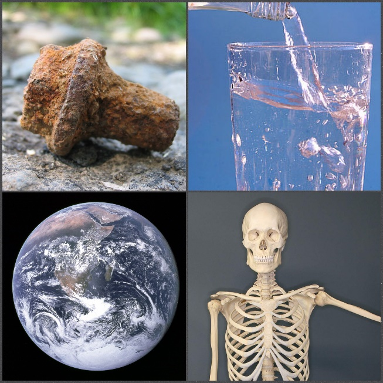
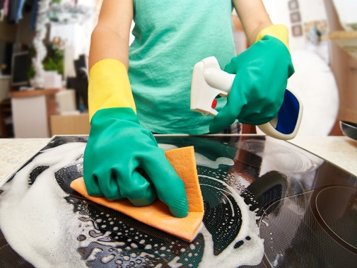
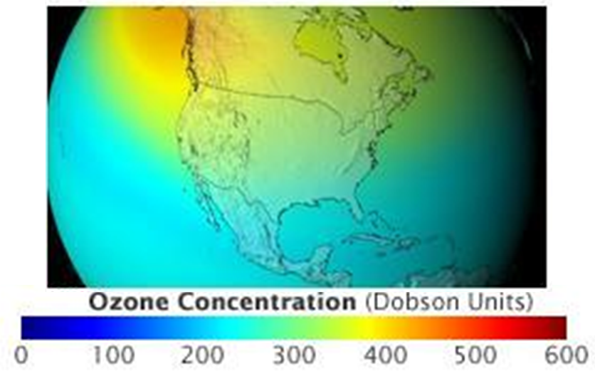
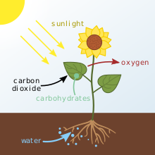
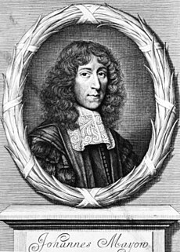
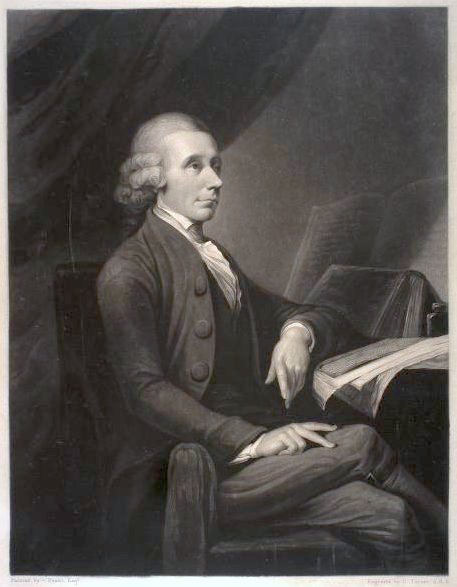
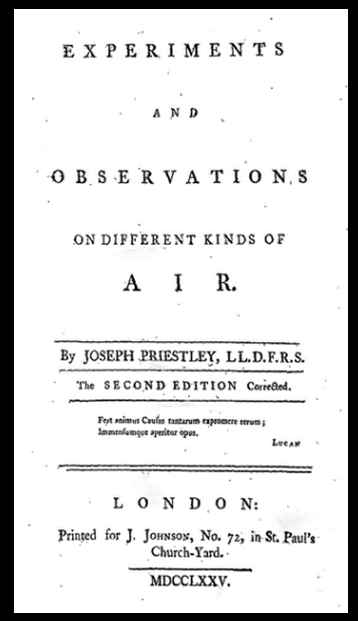
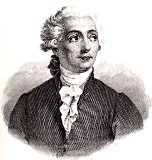

Dioxygen, which is two
oxygen atoms together, is what is in the air for us and all animals to breath.
Dioxygen, which is two
oxygen atoms together, is what is in the air for us and all animals to breath.
More Chemistry | Atoms / Oxygen / Phosphorus / Videos
More Chemistry | Atoms / Oxygen / Phosphorus / Videos
Oxygen is in Earth's crust, water, rust, bones, and teeth.
When oxygen atoms are alone, they can be dangerous, which is why there is a single oxygen trailing off bleach molecules. When you scrub with bleach, the oxygen comes off and kills bacteria. The water makes the pan slippery, so the germs slide off! There are not enough single oxygens in bleach to be threatening to humans.
Dioxygen, which is two
oxygen atoms together, is what is in the air for us and all animals to breath.
A layer of ozone (three oxygens) surrounds our planet to protect us from the sun's harmful UV rays, but some rays can still get through and burn you, so you wear sunblock!
Though photosynthesis, plants separate many CO2 (carbon dioxide) molecules into many single oxygens and dicarbons so they can survive. The plant releases those single oxygens into the air and bond with each other to form dioxygens, so they would not be dangerous.
In the early 1700s, Robert Boyle realized that air is required for burning.
In the late 1700s, John Mayow found out that it is only a part of air that is needed. He called it 'spiritus nitroarenes'. Mayhow also correctly guessed how lungs use oxygen for breathing and its vital role in the human body.
On August 1st, 1774, Joseph Priestley separated oxygen from anything else. He noticed that candles burnt longer in the gas and mice live longer while inhaling it plain. He then inhaled the special air himself and noticed no significant difference between it and the regular air.
Because Priestly published his work first, he is widely credited with discovering oxygen, but Michael Sendivogius in the early 1610s and Carl William Schlee in the late 1760s both independently isolated oxygen before him.
Schlee and Priestley both told Antoine Lavoisier about their findings and Lavoisier decided that it was a new element! He named from the Greek words for 'acid' and 'producer' because he wrongly thought it was in all acids.
Coded with HTML, CSS, and JavaScript